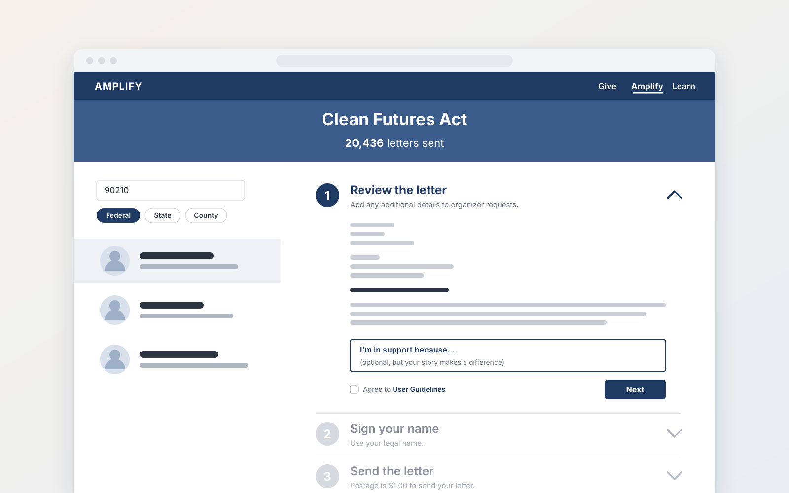
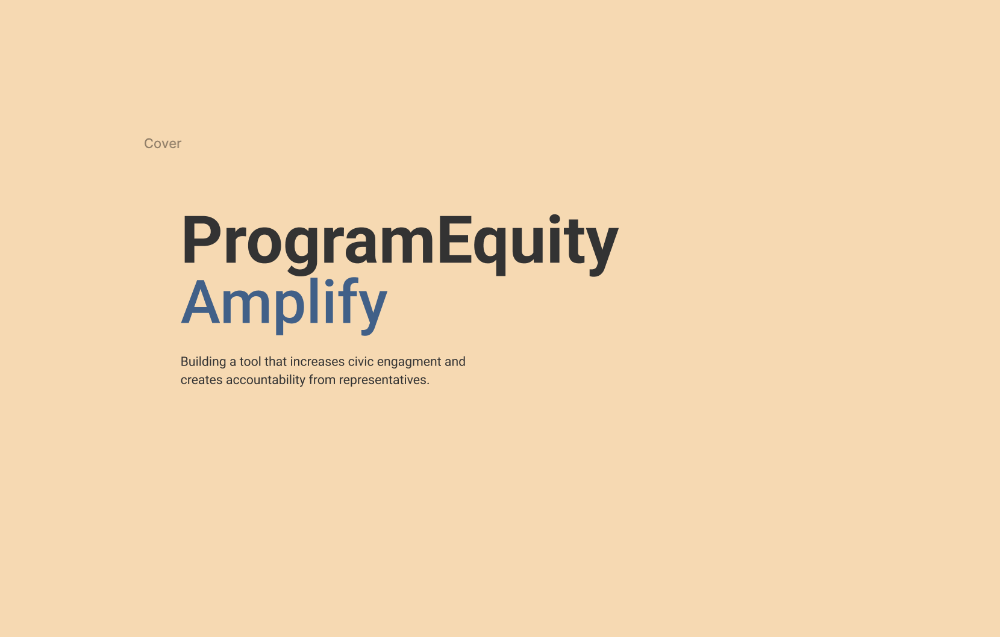
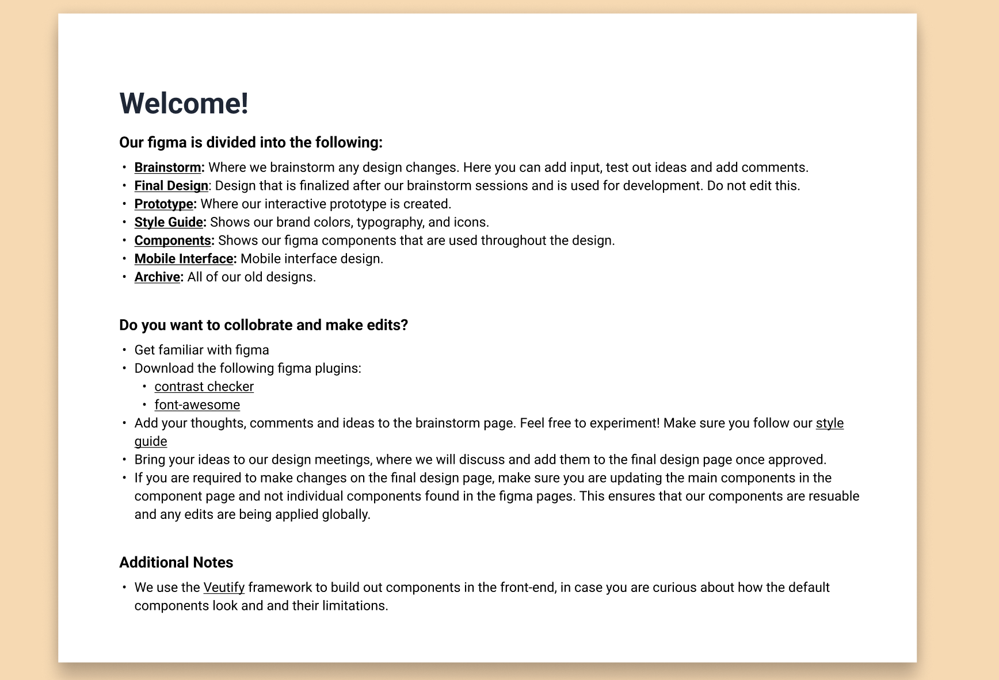
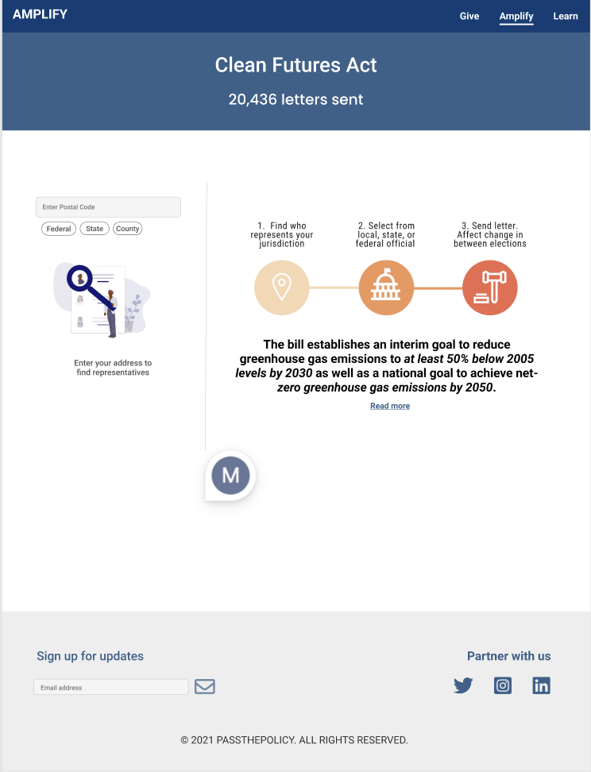
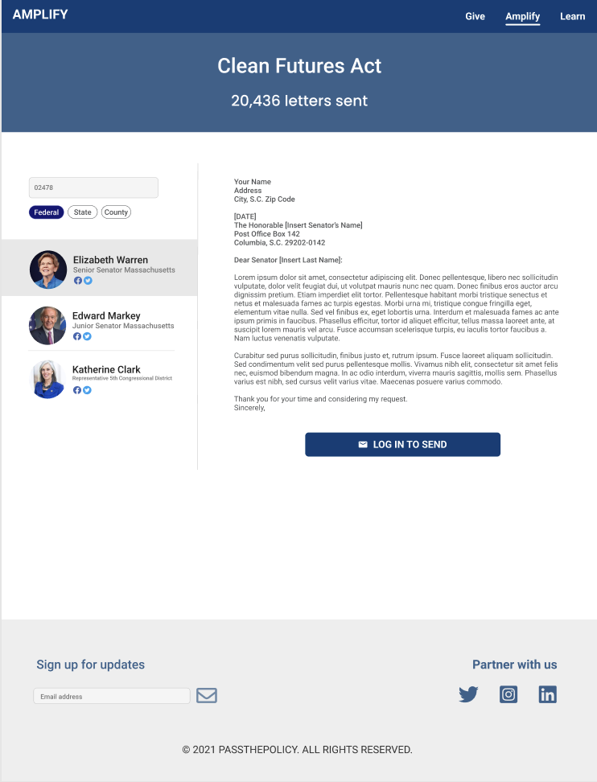
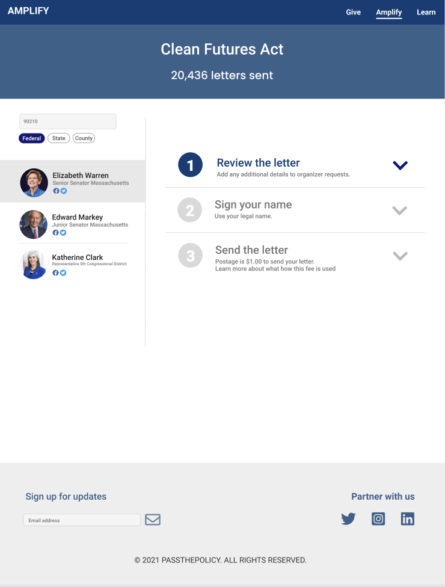
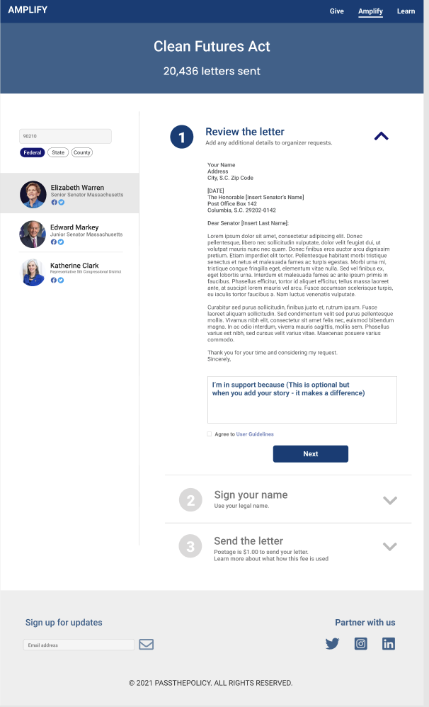
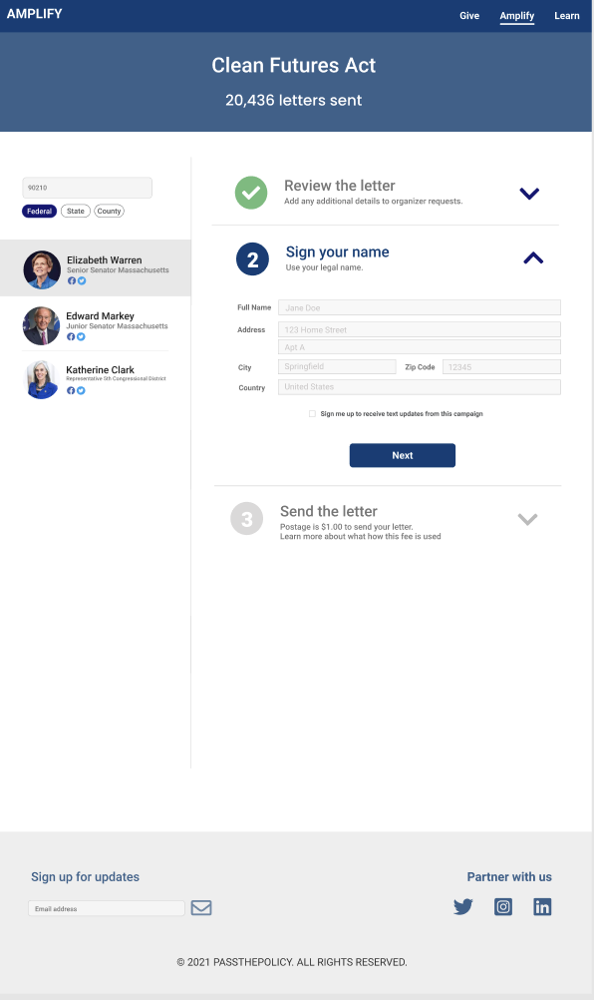
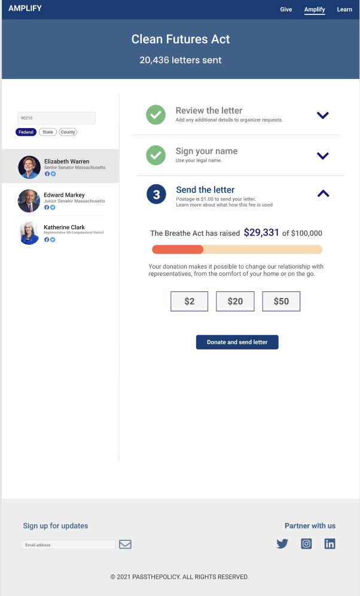

Earlier work · Open source · 2021–2022
ProgramEquity: building Amplify to increase civic engagement
Amplify is an open-source platform that helps advocacy non-profits turn supporters into action: find your representatives, understand the issue, send the letter. I led development as technical lead on a distributed volunteer team.
- 50% more contributorsAfter moving onboarding to Codespaces
- Technical leadDistributed volunteer team
- Node back endGoogle Civic API lookup and Auth0 sign-in

What I did
- Led a large open-source codebase used by advocacy organisations, and made contributing easy: a one-click Codespaces environment grew the contributor base by half.
- Built the front end in Vue with reusable components and Vuex state, integrating several external APIs to surface voter and representative information.
- Built and deployed the Node back end, including the Google Civic API integration for representative lookup and Auth0 for secure sign-in.
- Mentored junior developers in Vue best practices through pairing and code review.
Screens







